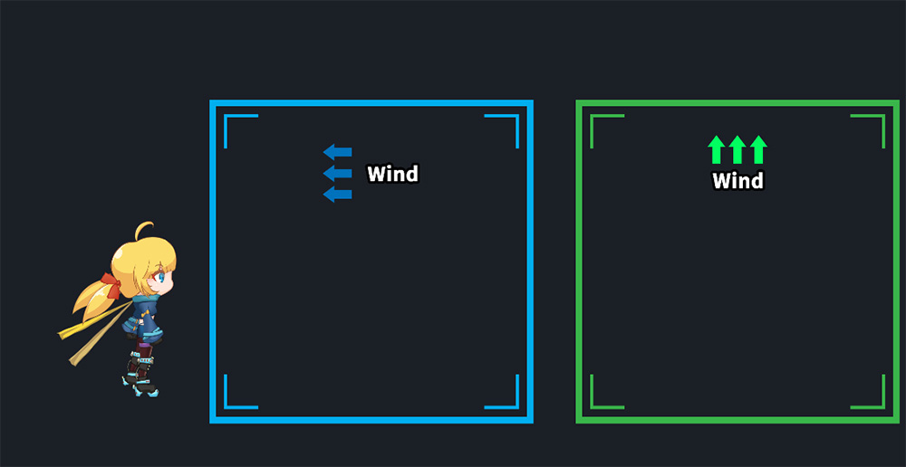
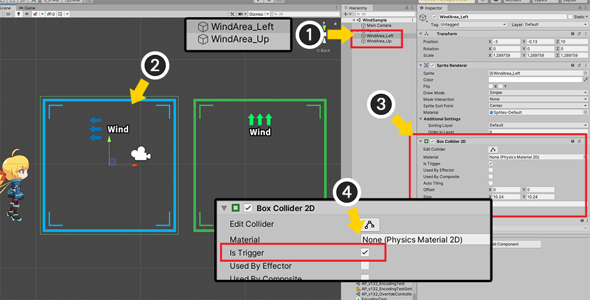
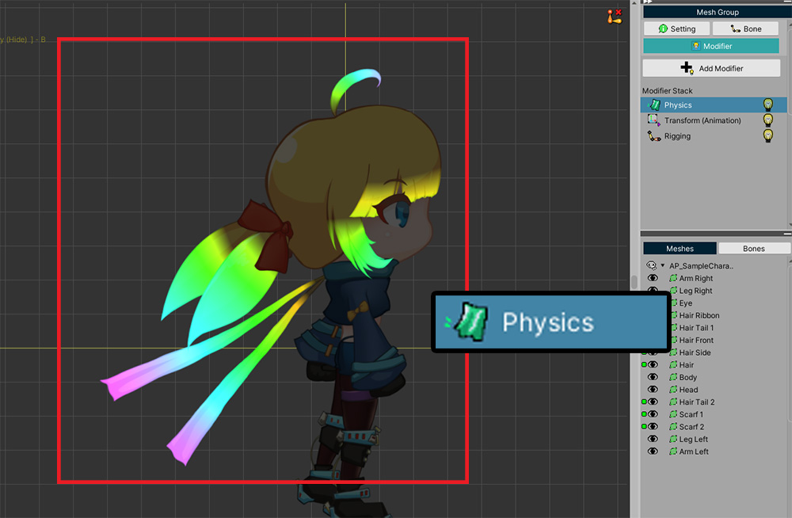
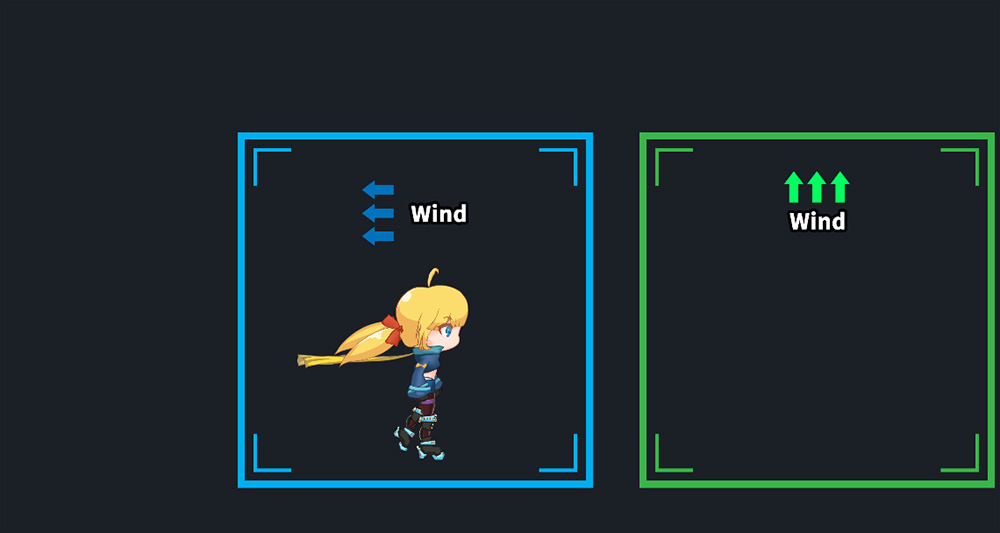
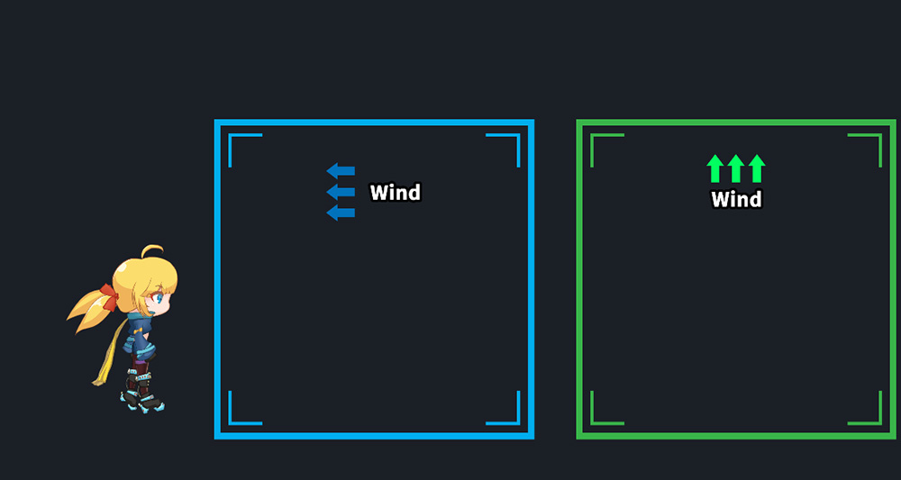

AnyPortrait > Manual > Wind effect
Wind effect
1.3.2

You can write a simple script to apply physics effects to a character that has a "Physics Modifier" or "Jiggle Bone" applied to it.
This page explains how to implement a wind blowing effect when a character enters a specific area.
Create various physics effects in your projects!
You may find it helpful to refer to the pages below.
- Physic Effect Script
- Getting Started : 1.9. Adding Physical Effects
- Detailed settings of Physics Modifier
- Jiggle Bone

The scene is set up as above.
It consists of a character and two areas.
(1) The names of the two areas are "WindArea_Left" and "WindArea_Up".
When the character enters these areas, the wind will apply to the left and upwards respectively.
(2) Select one of the areas.
(3) Add the Box Collider 2D component.
(4) Activate the Is Trigger property.

Add and set up components in the other areas in the same way.

Physics effects are applied to Physics Modifier or Jiggle Bone.
Add a Physics modifier and apply a physics material and weight to meshes.

You can also use Jiggle Bone to make it have a physics effect.
Now write the script below so that the wind is applied when the character enters the Trigger.
using UnityEngine;
using AnyPortrait;
public class WindSampleScript : MonoBehaviour
{
private apPortrait portrait;
private apForceUnit forceLeft = null;
private apForceUnit forceUp = null;
void Start()
{
portrait = GetComponent
}
private void OnTriggerEnter2D(Collider2D collision)
{
//When a character enters an area with the word "Left" in its name
if(collision.gameObject.name.Contains("Left"))
{
//If a force is already created, remove it
if (forceLeft != null)
{
portrait.RemoveForce(forceLeft);
}
//The force is applied continuously (Loop) in the Left (-1, 0) direction.
forceLeft = portrait.AddForce_Direction(new Vector2(-1, 0)).SetPower(5000.0f);
forceLeft.EmitLoop();
}
//When a character enters an area with the word "Up" in its name
if(collision.gameObject.name.Contains("Up"))
{
//If a force is already created, remove it
if(forceUp != null)
{
portrait.RemoveForce(forceUp);
}
//The force is applied continuously (Loop) in the Upward (0, 1) direction.
forceUp = portrait.AddForce_Direction(new Vector2(0, 1)).SetPower(5000.0f);
forceUp.EmitLoop();
}
}
private void OnTriggerExit2D(Collider2D collision)
{
if (collision.gameObject.name.Contains("Left"))
{
if (forceLeft != null)
{
portrait.RemoveForce(forceLeft);
forceLeft = null;
}
}
if (collision.gameObject.name.Contains("Up"))
{
if (forceUp != null)
{
portrait.RemoveForce(forceUp);
forceUp = null;
}
}
}
}
- OnTriggerEnter2D and OnTriggerExit2D events are called when a character enters or leaves the Collider with "Is Trigger" set. At this time, we used the name of the Collider to distinguish whether it was a Left area or an Up area.
- The AddForce_Direction function is a function that applies a force in the straight direction. This function works only when called together with SetPower and EmitLoop or EmitOnce functions.
- Using apForceUnit created in AddForce_Direction, Left Wind and Up Wind are distinguished and used when calling the RemoveForce function.

(1) Select a character.
(2) Add the script written above to the character.
You need a Collider and a Rigidbody 2D component to recognize that your character fits inside the Box Collider 2D.
(3) Add Capsule Collider 2D according to the shape of the character, and set the size and position.
(4) Add Rigidbody 2D.
In this state, the physics engine will let the character fall down.
You can prevent falling by checking "Constraint > Freeze Position > Y" among the properties of Rigidbody 2D.

Now let's run the game.
Characters are not affected by wind when outside the areas.

When the character enters the first area, you will see the wind blowing to the left.
This is because the OnTriggerEnter2D event is called and the AddForce_Direction function is run.

As the character enters the second area, you will see the wind blowing upwards.

When the character comes out of the areas again, the wind is not affected.
This is because the OnTriggerExit2D event is called and the RemoveForce function is processed.